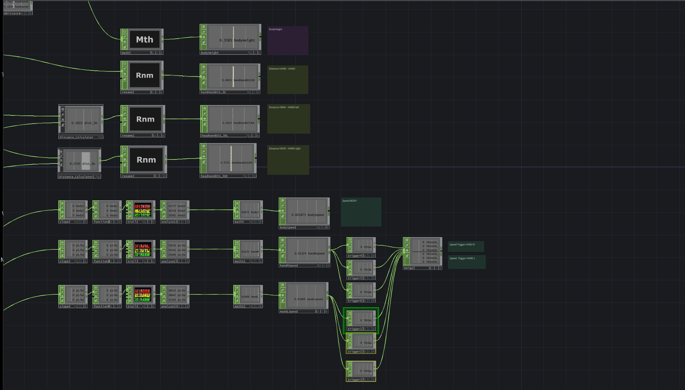

Embodied Systems - Sensing the digital is an experimental research project exploring the
relationship between body movement and sound.
Using motion tracking and skeleton data, physical movement is translated into sound parameters in real time.
It examines how qualities such as speed, intensity, stillness, and spatial presence shape the behavior of
sound layers,
transforming bodily gestures into an expressive instrument that can be played through movement.
The implementation deals with the questions of where emotions and bodily states are perceived in the body,
where they are located,
and how they can be expressed through movement and spatial presence. The aim is to make this interplay
audible in an experiential way
and to inspire people to explore embodiment. Its thematic approach addresses the growing bodily
disconnection in digital and
data-driven environments by fostering embodied awareness through movement and sound.
Central questions guiding the project are:
How can the body, in its vulnerable and resistant presence, become visible or hearable through
real-time processes? How can a creative interpretation of motion data processing make the body feel again / more throgh
movement?
Technical Implementation
The system consists of three main components: motion tracking (Kinect V2 Sensor), data processing (TouchDesigner) and sound generation (Ableton Live). The diagram below illustrates the data flow from performer movement to sound synthesis
Performer
Kinect V2
TouchDesigner
Ableton Live
Sound Output
Motion Tracking (Kinect V2 Sensor)
The system uses the Kinect V2 sensor to track the performer as a 3D skeleton.
The Kinect provides real-time joint positions (X, Y, Z) for up to 25 body joints.In this step the raw
skeletal data is captured continuously.
Each joint delivers absolute spatial coordinates, which form the basis for all later calculations.
Main tasks in this stage:
Capture skeletal positions of hands, head, torso, etc.
Extract joint coordinates for further processing
Provide stable real-time input to TouchDesigner
Data Processing (TouchDesigner)
TouchDesigner handles all data interpretation, transformation and motion parameter extraction. The raw
joint positions from the Kinect are processed into relational parameters.
Instead of using absolute coordinates, the system calculates relative body parameters. These relational measures are more intuitive,
stable for sound control.

Main tasks in this stage:
Filter jitter and smooth motion data
Compute relational distances between joints
Normalize values to a consistent 0–1 range
Send real-time OSC messages to Ableton Live
Sound Synthesis (Ableton Live)
Ableton Live receives the processed motion parameters and maps them to different sound layers. Movements
influence continuous sound behaviors instead of triggering discrete samples.
Several sound layers respond to different aspects of the performer’s movement, such as heartbeat
intensity, breathing noise, drone expansion, or spatial panning. Each layer is controlled by a
corresponding OSC parameter.
Main tasks in this stage:
Receive OSC parameters from TouchDesigner
Map values to volume, filter, panning, effects, etc.
Blend multiple sound layers into a unified sound experience
Together, these three components form a real-time system that translates movement into sound. The
performer’s motion is tracked, processed into meaningful parameters, and transformed into auditory
expression. This pipeline allows the body to function as an expressive, responsive sound instrument.
Related work
Embodied Systems - Sensing the digital is situated in the field of embodied interaction and
interactive performance with a relationship between motion, emotion and sound. The human body becomes the primary interface by itself for generating or modifying sound.
This project is mainly inspirated by following artists and projects:
movement & sound
Touch Me Hear
Juraj Kojs
Sensodance
Mark Hertensteiner
embodiment
Pixels
Claire Bardainne & Adrien Mondot
Just Your Shadow
Claire Bardainne & Adrien Mondot
Results
While the project initially started as a thematic and technical exploration, the resulting system evolved into a performative prototype that can be used as a body-driven sound instrument.
Through collaboration with an actor, the interaction design developed into an open and playful setup that encourages experimentation with movement and sound.
This suggests potential applications in theatre, performance art and stage-based media environments.
The system was tested with a performer and proved to be intuitive when using
relational movement parameters and a limited set of sound mappings.
Motion Parameter Extraction
Initial experiments used absolute joint coordinates from the Kinect sensor.
However, this approach proved unstable and difficult to control performatively.
The system therefore switched to relational body parameters, which
describe spatial relationships between body parts.
Examples:
Distance between hand and head
Distance between hands
Distance between hand and torso
Distances are calculated using the Euclidean distance formula:
distance = sqrt((dx² + dy² + dz²))
These values are filtered and normalized before being mapped to sound parameters.
Sound Mapping
Movement parameters control several sound layers inside Ableton Live.
Instead of simple trigger interactions, movements influence continuous sound behavior.
Movement Parameter
Sound Control
Hand ↔ Head distance
Heartbeat intensity
Hand ↔ Torso distance
Breath / noise layer
Distance between hands
Drone expansion
Left / right difference
Stereo panning
Discussion
Several insights emerged during development:
Relational body parameters are more intuitive than absolute spatial
coordinates.
Fewer sound parameters improve performability. Systems with too many
mappings became difficult to control.
Embodied sound metaphors help perception. Sounds such as heartbeat or
breath create an immediate emotional understanding for both performer and
audience.
Future Work
Technical Development
Future work could focus on improving the processing and interpretation of motion data, for instance more refined filtering, additional motion parameters, and more complex mappings between bodily movement and sound.
Also the sound design offers room for expansion and experimentation. Unfortunately, the original idea of creating a comprehensive spatial sound concept was too extensive for the time frame of the project.
The setup could be used as a starting point to create an expanded spatial concept that also includes conditional parameters beyond simple distance relationships, for example incorporating movement speed or patterns of movement or key points in space.
Performative Development
The system is currently being further developed within a theatre project together with the acting class by Lara Martelli Hisleiter of the Filmuniversity Babelsberg. In collaboration with the actor Riccardo Campione, the setup will be adapted and refined for a solo stage performance e.g. by improving the system’s reliability in a live theatre context. The performance itself explores themes of climate change and climate migration.